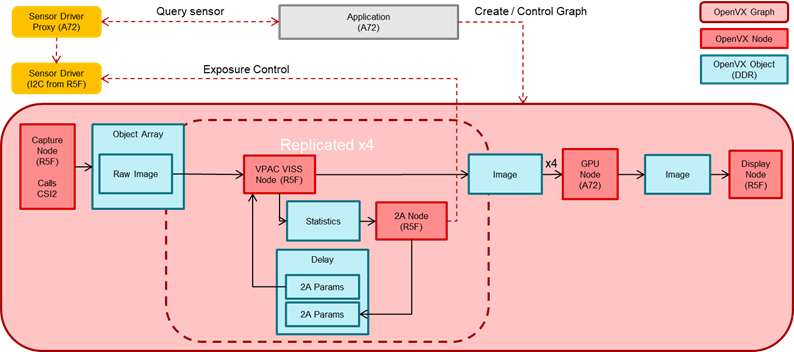
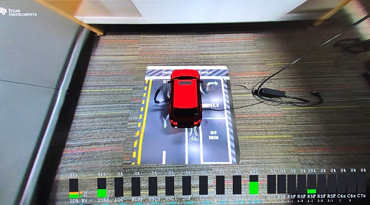

Introduction
This application shows a 4 image sensor 3D Surround View image. The 4 cameras capture a raw image which is processed by the on-chip ISP. The 4 images are given to the GPU to do the 3D Surround View rendering. This image is given to the DSS to display on a screen. Important note: it is requires to first run the vx_app_srv_calibration prior to running 3D SRV in order to have a properly calibrated image.
Supported plaforms
| Platform | Linux x86_64 | Linux+RTOS mode | QNX+RTOS mode | SoC |
| Support | NO | YES | YES | J721e / J721S2 / J784S4 |
Data flow
The Surround View app contains two separate graphs. The first graph is simply used for generating the GPU LUT that contains the SRV bowl mapping. This graph is only executed once with the given application; however, if the GPU LUT needs to change depending on the scene, this can be run multiple times. The second graph contains the full GPU SRV, capturing using the capture node, giving the raw output to the VISS and AEWB nodes to perform the image processing. The output of the VISS is then given to the GPU to perform the rendering of the SRV image. Finally, this output image is given to the display node to be shown on the screen.

Steps to run the application on J7 EVM
- Build the application and related libraries as mentioned in Build Instructions
- Follow steps 1-3 as mentioned in Run Instructions
- Important note: be sure to extract all test data to SD card or else the demo won't run
- The input files come from "${VX_TEST_DATA_PATH}/test_data/psdkra/srv/srv_app/"
- In Linux+RTOS mode
- Setup requirements:
- Connect 4 D3-IMX390 (Version1-D3RCM) sensor boards on cam0-cam3 input port of the Fusion1 Platform, as shown in the above image. (Note: these are the only sensors that have been tested with the SRV demo). Please ensure that the power to the Fusion1 Platform is connected.
- The four cameras must be connected in the order front, right, back, left to cam0, cam1, cam2, cam3 respectively.
- Either an eDP display or HDMI display with infotainment daughter card must be connected to the EVM in order to visualize the Surround View output. Note: the display type is chosen via a build option as described in Step 3 of Run Instructions
- Prior to running the SRV demo, the Surround View Calibration demo must be run in order to view a properly calibrated demo.
- After running the Surround View Calibration demo, the following files will be located in the "${VX_TEST_DATA_PATH}/test_data/psdkra/srv/srv_app/" path:
- CALMAT.BIN
- CHARTPOS.BIN
- LENS.BIN
- You may need to power cycle the board after running the calibration demo. If the SRV demo hangs after running calibration, please power cycle the board.
- The files "app_srv.cfg" and run_app_srv.sh will be copied from the folder "vision_apps/apps/basic_demos/app_linux_fs_files" to the /opt/vision_apps folder.
- The values in "app_srv.cfg" can be modified as described below:
- The is2MP value is not used in the camera-based demo so this can be ignored.
- The offsetXleft, offsetXright, offsetYfront, and offsetYback correspond to the size of the Surround View bowl. The Surround View bowl is a 1080x1080 bowl and these numbers correspond to the distance from the center of this bowl. These can be adjusted to form a more narrow bowl if desired.
- The num_views parameter as well as each view parameters can be adjusted as desired to modify the viewpoints seen in the demo. Note: the num_views and the total number of view parameters must match.
- VX_TEST_DATA_PATH environment variable is set as part of vision_apps_init.sh
- Run the app as shown below on the EVM target
cd /opt/vision_apps
source ./vision_apps_init.sh
./run_app_srv.sh
- Output will be visualized in real-time on your screen
Sample Output
Shown below is a sample image of the output of the Surround View application



 1.8.14
1.8.14